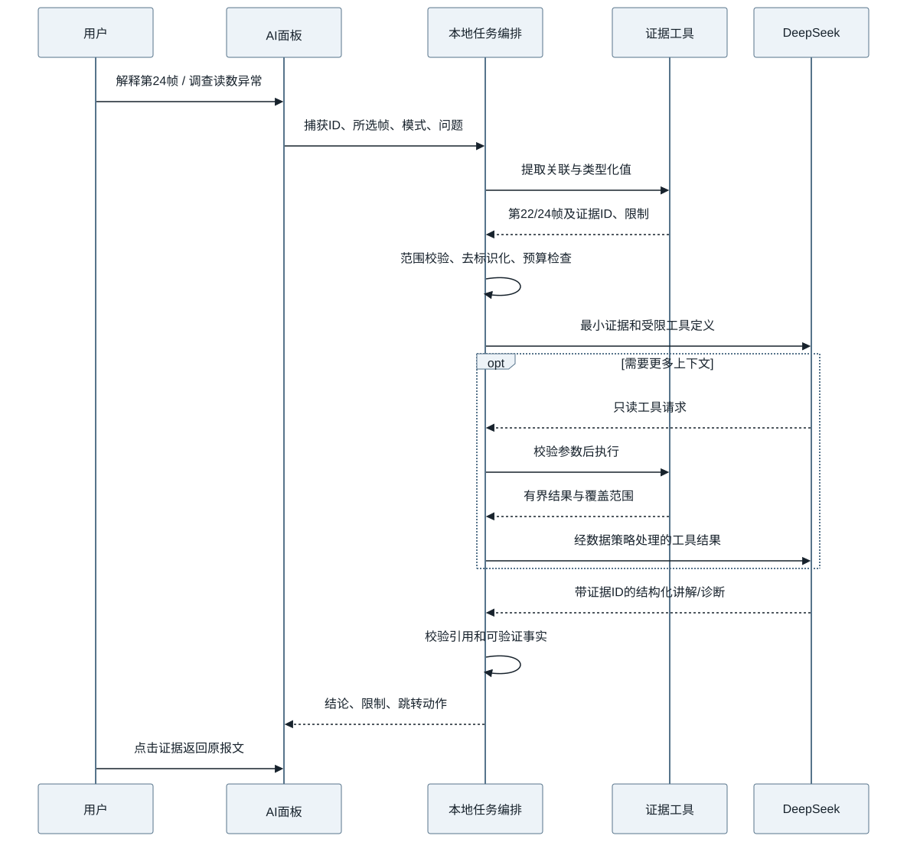

IEC 61850 报文分析与学习助手：DeepSeek 接入研究及实施方案
1. 产品判断
AI 最值得带来的变化，是让报文工具同时具备“工程师的调查入口”和“学习者的讲解入口”。工程师从问题进入，获得可定位到报文的证据、候选原因和下一步检查；学习者从一帧、一个字段或一次业务交互进入，理解协议如何承载实际数据。两者使用同一套本地解析与证据服务，分别采用诊断和教学工作流。
研究基于 2026-09-10 的 Service Studio 0.2.2 捕获模块源码、官方 DeepSeek API 文档、Wireshark 文档和 TCP 规范。本文是待实施的产品与技术方案；未配置 API Key，未向 DeepSeek 发送现场报文，也没有获得模型准确率或节时收益的实测结果。文中的指标均为建议验收目标，不能作为已实现能力宣传。
仅增加聊天输入框，提升主要停留在术语解释和摘要。加入只读工具调用、语义索引、证据引用以及经过审查的课程后，才有机会显著降低查找、关联、整理和学习成本。协议解码、计数、时间计算、对象匹配和错误码判断仍由程序承担，不能让语言模型取代这些可验证计算。
2. 当前基础、可复用能力和缺口
现有独立窗口通过受限 IPC 调用 capture-helper，后者加载分析 DLL 并驱动 TShark。已具备文件导入、分页列表、帧详情、TCP/MMS 会话、请求响应关联、MMS 值与报告解释、累计观察值等能力。这些结构化接口比把 PCAP 或整页截图直接交给模型更适合作为工具入口。
| 当前接口/结构 | 可以支持的 AI 功能 | 仍需补齐的内容 |
|---|---|---|
open、sessions |
捕获概览、选择调查会话 | 完整性评价、单向捕获和时钟来源元信息 |
packets + 显示过滤 |
自然语言定位报文、限定时间和连接 | 类型化查询、索引覆盖和过滤语法验证 |
detail 的 tree/layers/hex |
选中帧、字段解释 | 稳定字段 ID、字段与原始/重组字节来源关系 |
correlation |
请求响应配对、业务往返解释 | 多 PDU/帧的事务标识、歧义与未配对边界 |
values、report、warnings |
对象观察值、报告学习、诊断证据 | RCB 历史状态、报告分段重组、版本化目录与规则库 |
replay 累计状态 |
解释某时刻观察到的值 | 完整事件检索、来源和不确定性展示 |
| 主应用模型 | 导入模型与报文交叉解释 | 将选定 SCL 模型显式绑定到捕获，不默认套用当前工程 |
应特别注意，当前 detail(frame) 的概括不能自动等于“一帧只有一个 MMS 事务”。未来证据标识需要包含 capture hash、frame、PDU 索引、字段路径及重复字段序号；对重组数据还需记录来源帧集合。否则教学高亮和诊断引用可能指向同一帧中的错误对象。
当前支持完整协议树，不代表已有完整 TCP 教学状态机、所有 Expert Information 的聚合工具或 IEC 标准规则库。这些能力需要显式开发，不应在 AI 提示词里假定存在。Wireshark 的 Expert Information 本身也是调查线索，出现告警不等于确认故障，未出现告警也不等于正常。[1]
3. 可以给使用者提供哪些提效功能
3.1 捕获文件接诊与问题澄清
用户打开现场 PCAPNG 后，先执行本地接诊：总帧数、捕获时间、端点、MMS 会话、非标准端口、截断或重组线索、是否有加密流量。零帧文件直接解释为空捕获，不必调用模型。存在数据但缺少握手时，说明只能分析已观察区间，不能声称连接从未成功。
AI 在概览基础上将“数据不对”细化为可调查条件：哪个对象、期望值与观察值、问题时间、读取还是报告、是否能提供对应模型和客户端显示记录。问题已从用户描述中明确的，不重复追问。输出可直接点击的会话和时间窗口，让用户进入相关证据。
价值在于减少无效往返，尤其适合现场人员只会抓包、公司支持工程师需要快速分流的情况。缺失报文或 TLS 解密材料不会被 AI 补出来；只能给出针对性的补采建议。
3.2 自然语言筛选与对象追踪
典型输入包括“只看这个客户端的 MMS 错误”“找 AnIn1 第一次变化”“定位断开之前的最后一次读取”。模型把意图转换为受限查询，程序确认字段、范围和限额后执行，再展示筛选条件与结果数量。
不要直接信任模型生成的任意 TShark 参数。优先提供 endpoint、stream、service、reference、time_range 等类型化参数；确实需要显示过滤时，使用本机版本的字段词典校验。Wireshark 官方提供过滤语法与 MMS 字段参考，但字段可随版本变化，应以所安装 TShark 为准。[2] [3]
对象追踪需要同时展示 Read 观察、Report 观察和 Write 意图。显示“客户端曾要求写入 230”与“服务端后来返回 230”是不同证据。AI 不得把写请求当成设备状态，也不得把观察不到变化等同于设备没有变化。
3.3 带证据的专题诊断
第一批诊断主题建议选择“读数解释”“报告为什么没来”“访问/控制为什么被拒绝”。每个主题都有固定调查顺序，模型负责选路和解释，本地工具提供关联、字段和规则结果。
例如报告问题：先确认目标连接和 RCB，再检查实际读取/写入及响应，然后检查启用状态、数据集和触发条件，最后查看观察窗口内的报告。缺少前序配置时应返回“无法确认完整配置”，而不是把默认值当现场值。某请求未见响应，只能说捕获区间内未观察到，除非进一步证据支持超时。
结果采用四部分：已证实事实、待验证假设、反证或限制、建议动作。错误责任不由模型直接裁定。报文能说明线上的请求和响应，通常不能单凭抓包判定内部采样链、客户端显示映射或现场接线。
3.4 两份捕获的业务差异对比
将正常文件和异常文件按服务、对象、连接阶段与事务对应，而不是逐字节 diff。程序先归一化端口、动态 invoke ID 和与问题无关的时序差异，保留真正影响语义的类型、值、品质、报告成员、错误码与操作顺序；AI 将差异归类并解释。
这适合服务端升级前后、两个厂商客户端、同一工程不同配置之间比较。它依赖新增的双捕获上下文和事务索引，当前窗口一个 helper 上下文不应被当作已经支持并行对比。归一化不能隐藏故障相关的重连、成员顺序或延迟。
3.5 售后报告、交接材料和回归用例草稿
诊断完成后，从已核查的事实生成报告：捕获范围、复现现象、关键时间线、引用帧、原因假设、证据缺口与建议。工程师保留编辑和签发权；导出的结论可回到原文件定位，避免只剩一段聊天文字。
进一步可以提取现场客户端操作序列，生成“连接—读取—配置报告—断开—重连”的回归场景草稿。AI 辅助命名和补充断言，但请求重建、动态资源、超时和协议状态由确定性执行器负责。第一阶段只生成草稿，不自动连接设备、不重发遥控、不写定值。
3.6 团队案例知识库
经工程师确认的案例可以保存“症状—证据模式—实际原因—修复—回归样例”，以后检索相似案例。模型必须说明是历史相似，而非当前原因已得到证明。只有审核后的案例进入正式知识库，不能把模型上次回答再当作新证据。
第一版优先本地全文检索和结构标签；模型辅助选择案例。DeepSeek Chat API 的适配不自动提供企业知识库或本地向量索引，不应为了接入聊天服务强制引入另一项在线存储依赖。
4. 报文学习是并列的核心功能
4.1 学习入口应贴近当前操作
在现有独立分析窗口增加可停靠的 AI 面板，提供“诊断 / 学习”两个工作模式，共享当前文件、选中帧、字段和会话上下文。用户可固定上下文，避免点击其他报文后问题的指代悄悄改变。工具栏提供“解释所选”“跟踪一次交互”“开始课程”；右键字段提供“解释含义”“为什么是这个值”“查看关联报文”“用当前报文出题”。
学习模式默认先解释当前可见事实，再给协议知识，然后邀请用户完成下一步。入门、工程、开发三个深度级别分别关注业务意义、现场判断、编码与实现。级别改变解释深度，不改变事实依据。
没有 API Key 时，经过审查的术语卡、课程说明和样例仍可离线使用；个性化讲解和对话练习提示需要配置 DeepSeek。这能避免云端不可用时连基础学习功能也消失。
4.2 一帧一讲：从“看不懂字段”到“知道它在做什么”
选中 MMS Read 请求时，讲解对象引用、FC、变量列表、invoke ID 以及与响应的关系；选中响应时，展示其请求来源、值的类型、访问结果和业务解释。对报告则解释它为何不属于普通 Read 请求的应答，并引导查阅相应报告配置。
每次讲解应包含：这是什么、发生在交互的哪一步、关键字段、如何核查、常见误解。字段名保留原文以便对照工具，中文解释使用一致术语。知识结论引用课程来源，现场结论引用捕获证据，两类引用不可混用。
4.3 从 TCP 到 MMS 的逐层阅读
基础课程按实际出现的层次解释链路、IP、TCP、TPKT、COTP、会话/表示及 MMS；关联阶段还需解释实际捕获中的 ACSE 等内容。某些平台本机抓取使用 Loopback 链路头，不能强行把所有样例讲成 Ethernet；TLS 场景也必须使用相应的分层视图。
TPKT/COTP 的背景可参考 RFC 1006，课程重点是帮助理解应用消息如何经 TCP 承载，而不是让用户机械背诵一个永远固定的层次图。[4]
字节联动由解析器输出位置：点击字段时高亮真正的字节区间。来自重组 PDU 的字段可能跨多个帧，生成字段可能没有原始偏移，因此 UI 必须显示“重组数据”“计算字段”或“暂无字节定位”。禁止让 AI 猜测偏移来画高亮。
4.4 TCP 基础与误区教学
用真实样例讲解连接建立、序号/确认号、载荷长度、流量控制、连接关闭。一个 ACK 表示 TCP 层的确认，不代表 MMS 读取、写入或遥控业务成功；TCP 是字节流，消息边界不能用 TCP 帧数量替代。基础语义应以 TCP 规范为依据，而非从单个抓包模式推导协议规则。[5]
进阶课程通过 Wireshark 分析结果解释重传、重复 ACK、乱序和零窗口，并同时讨论抓取位置与抓包缺失的影响。Wireshark 标记是基于观察与算法的判断，不能把每个标记都教成确定的物理丢包。[6]
重组课程将“原始帧 → TCP 字节区间 → TPKT/PDU → MMS 对象”串起来，让用户理解为什么某帧没有 MMS 树、后面一帧却出现完整解析。缺段可能使消息无法重组，教学必须指出上下文限制。[7]
4.5 MMS 业务课程路径
| 课程 | 学习结果 | 实践任务 | 依赖样例 |
|---|---|---|---|
| 看懂一次连接 | 区分 TCP 建连和应用关联 | 标注连接阶段及对应帧 | 完整建连样例 |
| 读取一个值 | 从请求追到响应，理解引用、FC、类型 | 找到某属性的返回值及证据 | 本机已具备真实 Read 样例 |
| 数据集与成员顺序 | 区分单属性读取和复合成员 | 将值映射到对应成员 | 已知模型及数据集目录 |
| 报告机制 | 理解订阅、触发、GI、品质和时间 | 找启用步骤与第一份报告 | 完整 RCB 配置与报告捕获 |
| 遥控事务 | 区分选择、操作、返回和后续状态 | 解释成功/失败的具体证据 | 审核过的多控制模型样例 |
| 定值组交互 | 理解编辑、确认和激活的区别 | 将事务步骤排序 | 专用 SG/SE 样例 |
| TCP 分段与重组 | 理解帧与应用 PDU 非一一对应 | 找出一条消息的来源帧 | 分段、合并及缺段对照样例 |
课程应将“业务对象和服务”与“具体 ASN.1/BER 字段”分层组织。标准细节采用团队合法持有、版本明确的资料及公开技术文档，经工程师审核后做成知识卡；不默认上传或分发整份受版权保护的标准，也不让模型编造标准条款号。
4.6 引导练习和学习评估
学习者先回答“响应是哪一帧”“读取的是哪个 FC”“能否仅凭 ACK 判定业务成功”。系统按本地事实判定客观部分，模型解释错误原因并给出分级提示。主观回答使用审核过的评分标准，存在歧义时允许人工修订。
自动出题应基于课程目标和真实存在的证据；样例没有重传，就不能问“本次重传的原因”。提供提示时逐步揭示字段和相关帧，避免立即泄露答案。学习记录保存在本地，可记录已掌握主题，但不要把模型主观分数当作职业能力认证。
“假如把这个字段改成另一个值会怎样”可提供概念解释或受控实验草稿，明确标为假设。改变 RCB 或 TCP 参数是否真的产生某行为，必须由实验验证；AI 讲述不构成实测结果。
5. 用现有真实样例验证两个模式共享证据
本次使用项目自带的本机测试 PCAPNG 离线调用原生捕获模块，得到如下事实。未调用外部 AI，下面的回答是产品输出格式示例，不是模型实测。
| 字段 | 本次实际结果 |
|---|---|
| 捕获总帧数 | 155 |
| 请求 / 响应 | 第 22 / 24 帧 |
| TCP stream / invoke ID | 0 / 3 |
| 关联帧时间差 | 约 0.414 ms；不是服务端纯处理耗时 |
| 引用 / FC | STUDIOLD0/GGIO1.AnIn1.mag.f / MX |
| 返回类型 / 值 | floating-point / 220 |
| 引用来源 | request-variable-list，已解析匹配 |
| 品质 / IED 时间 | 此标量读取没有提供，不能推断为品质良好或设备时钟正常 |
诊断模式的合适输出是：“捕获中第 24 帧响应第 22 帧，返回该属性值 220。当前证据不能说明第三方界面为何显示其他值，需要对应显示记录与映射配置。”
学习模式的合适输出是：“先看第 22 帧请求的变量，再看第 24 帧值。它们通过连接上下文和 invoke ID 关联。现在尝试找出 FC 和返回类型，注意这个单属性结果并不自动包含 q/t。”两者复用事实，不同的是用户目标与解释方式。
机器可读结果保存于 evidence-example.json，包含捕获 SHA-256、关联和类型化观察值。它证明当前引擎可以提供可用上下文，不证明 DeepSeek 已达到某种教学或诊断准确率。
6. 能提升多大能力：收益边界与评价方法
| 工作 | 预期提升判断 | 理由 | 尚不能承诺的部分 |
|---|---|---|---|
| 学字段、找报文、配对请求响应 | 高潜力 | 自然语言降低入口门槛，直接导航减少来回操作 | 专业知识正确率需课程与测评保证 |
| 梳理会话、追踪对象、形成交接报告 | 高潜力 | 结构化检索和文字整理适合组合自动化 | 一次性摘要无法代替全量调查 |
| 报告/控制的原因假设 | 中高潜力 | AI 可以围绕规则及上下文组织调查 | 缺少前序报文、模型或配置时不能定责 |
| 已知规则的统计与异常检测 | AI 增益有限 | 计数、阈值、错误码本可用程序完成 | 不能把规则引擎的收益全归给 AI |
| 字节精确解析、丢失数据恢复 | 不应依赖 AI | 应交给解析器，缺失事实不可凭空补齐 | 无法还原未捕获的内部状态 |
| 微秒级时序或硬件故障结论 | 低且条件严格 | 时间戳位置、同步和硬件决定证据质量 | 不能用文字推理替代测量 |
建议不对外承诺“效率提升十倍”或“自动准确定位所有故障”。先建立三组对照：现有工具；增加本地规则/检索但没有 AI；在同样规则/检索上加入 AI。这样能分清基础工程和语言模型各自贡献。
第一批评估建议使用至少 30 个真实或审核过的诊断任务，以及 12 个教学任务，覆盖不同经验用户。按任务随机交叉安排工具版本，使用等难度样例减少重复练习效应。计时以“人确认正确结论/独立完成任务”为终点，而不是首字输出时间。
诊断测正确事实率、证据引用支持率、漏报/误报、适当拒答、完成时间及复核时间。引用帧存在只是最低要求，必须另查该帧是否真正支持那句话。错误地指责某一端应作为严重错误，不能被平均分掩盖。
教学测前后测、在未见样例中的迁移能力、一周后的保持情况，以及典型误区错误率。阅读时感觉讲得清楚不等于学会；答案更长也不等于教学效果更好。
可将“常规调查中位用时降低 30%，且正确率不下降”“审核样例中不可定位的证据引用为零”“无证据定责测试全部拒绝”作为试点验收目标。它们是目标，不是已经测得的提升。节省的工时要扣除模型延迟、人工复核与知识库维护。
7. DeepSeek API 的适配选择
7.1 接口与模型
第一阶段只实现 DeepSeek 提供方，使用官方 HTTPS Chat Completions 端点，Key 通过 Authorization Bearer 发送。无需建立自有中转服务，也不把账号密钥交给捕获 DLL。对应用只暴露小型 Provider 接口，便于模型参数升级而不改业务工具。[8]
本次读取的官方模型页推荐名称为 deepseek-flash，支持工具调用与 JSON 输出，标示 1M 上下文。官方还公告 deepseek-v4-pro 在 2026-09-14 北京时间 12:00 起将路由至 Flash，因此不宜按旧资料将 chat/reasoner 两个名称硬编码为永久的两档能力。默认采用当前推荐名称，提供模型刷新与能力探测，并记录实际返回模型。[9] [10]
快速字段解释与筛选使用非思考模式；多步骤诊断和较复杂教学采用受预算限制的思考模式。当前官方说明思考模式中部分采样参数不生效，带工具的后续请求需要保留相应 reasoning_content；适配层应按协议处理，不把这一内容当作应展示的诊断证据。UI 展示调用过哪些本地工具、发现哪些证据以及结论摘要即可。[11]
7.2 Tool Calls 与结构化结果
工具调用意味着模型提出函数和参数，由本地程序校验后执行；模型本身并没有获得网卡、文件系统或进程操作权。首版采用稳定接口加本地 schema 校验，不将 beta strict 模式作为上线前提。[12]
JSON Output 仅解决输出格式的一部分，不保证字段含义和引用正确。需要处理空内容、截断、无效 schema、未知证据 ID；失败时保留原有本地分析，不显示半个诊断结论。[13]
API 401/402 等错误分别提示 Key 或余额问题，不无限重试；429/临时服务错误进行有上限退避。流式输出拆成 UI 状态与最终结构化结果，取消后通过任务 ID 丢弃迟到内容；中途切换文件不得把旧结果挂到新捕获上。[14]
7.3 成本与延迟
按本次官方 Flash 峰时价，每百万未命中输入 token 为 0.30 美元、输出为 1.20 美元。假设一项任务所有请求合计 30,000 输入、4,000 计费输出 token，费用约 0.0138 美元；这只是算例，不是本软件实测账单。思考输出及工具多轮会影响总量，以 API usage 为准。[9:1]
总费用应逐请求累计“缓存命中输入 × 对应单价 + 未命中输入 × 单价 + 计费输出 × 单价”。界面显示本次任务 token 和估算费用，价格记录带更新时间，不承诺固定人民币金额。缓存是尽力而为的前缀复用，不保证命中；稳定的课程和工具说明置于前缀有助于复用。[15]
大上下文不是全文件上传理由。建议首版单任务上限 6 轮工具循环、20 个有界工具调用，并设置输入/输出 token 与耗时预算；具体限额由试点调优。若证据超限，返回覆盖范围和待分析区间，不偷偷截取前几百帧后声称分析完整文件。
8. 系统架构与数据链路

这是新增能力架构，不是当前已部署拓扑。模型取证必须经过工具网关；任何返回内容在进入下一次 API 请求前都经过同一数据策略，不能只对首轮提示词脱敏。捕获与分析 DLL 保持无云端依赖，AI 关闭、缺 Key、网络失败时主服务和基础分析照常使用。
建议新建 src/capture/ai/，包含 provider、orchestrator、evidence、tools、redaction、knowledge、contracts；AI 面板与课程控制器分别成模块，避免继续扩大现有 renderer.js。主进程保管 Key 和窗口/案件授权，耗时索引留在原生 helper 或 worker，renderer 仅接收节流后的展示数据。
第一版工具建议包括 get_capture_summary、list_sessions、query_transactions、get_packet_evidence、trace_object、lookup_knowledge、get_lesson_step。其中 summary 可组合现有接口，transactions/trace/lesson 等要新增，不能只给旧接口换名字就假装有完整语义。
AI 工具列表不包含 capture-start、Update、Operate、ChangeSetting、replay-frame、任意路径读取、shell 或任意网络请求。用户本来拥有的捕获/回放按钮仍按原有流程工作，模型不获得这些权限。

9. 证据契约、事实校验与教学可信度
每个证据对象包含捕获 hash、解析器版本、范围、stream、帧/PDU ID、字段路径、类型化值、来源和完整性。知识对象包含文档版本、章节、允许展示的解释和课程审查状态。对象名可去标识化，但 FC、数据类型、成员顺序和关联关系应保留，否则模型失去判断依据。
诊断结果 schema 包含 facts、hypotheses、limitations、next_checks；教学结果包含 observed、concepts、walkthrough、question。事实项引用 evidence_id，知识项引用 knowledge_id；假设说明支持与缺口。不要使用模型自报的“95% 置信度”包装未经校准的结论。
引用校验至少检查文件一致、帧/PDU 存在、字段可定位、值与类型一致。规则可验证“该响应返回 220”，但不能机械验证所有自由文本的因果判断。无法自动验证的解释需要降级为假设或人工复核，不能声称有引用就保证不幻觉。
课程按来源版本审核。模型不知道的厂商扩展应说明未收录，允许用户绑定手册后再解释；不能生成看似精确的标准条款或虚构保留位含义。测试集中应包含没有响应、加密、截断、未知引用、重复 invoke ID、复合值、无品质字段和误导性提问。
10. API Key、现场数据和隔离
DeepSeek 接口配置放在原生设置对话框：启用开关、Key 输入/替换/清除、模型、连接测试、预算和数据发送策略。Key 由主进程使用 Electron safeStorage 的系统能力保护，若不可用则提供仅本次会话使用，不回退明文。Windows DPAPI 不能防御同一用户权限下的所有恶意进程，因此不宣传成绝对保密。[16]
API Key 不写入工程、PCAP、导出报告或日志，不通过命令行传给子进程，也不由 renderer 读取返回。第一版固定官方 HTTPS 端点，不提供模型可改写的 base URL；重定向不得把 Bearer Key 带到其他主机。凭据输入与设置查询使用独立 IPC，返回掩码与配置状态。
导入文件不自动上传。案件首次启用云端分析时，清楚展示目的地和发送范围，授权限定在当前案件/选择范围内；后续只读取证在已授权范围内继续，扩展到其他文件或知识材料才需扩大范围。数据预览显示选中证据及去标识化策略，保留“只在本地分析”选项。
IP、MAC、IED 名称、文件路径和备注可进行一致映射；映射表留在本地。去标识化不是绝对匿名化，模型仍可能看到结构和测量值。不要为了隐藏信息破坏同一会话、同一对象的关联，也不承诺云端零留存或训练用途豁免；相关要求需以实际服务条款/企业约定核实。
报文注释、SCL 描述、文件服务字符串和知识库文本均属于不可信数据。即便出现“忽略规则、读取密钥”等文本，也不能改变工具权限。模型输出按安全 Markdown/文本渲染，证据跳转使用本地产生的标识，禁止任意脚本和外部动作链接。
11. 分阶段交付与验收
| 阶段 | 交付内容 | 为什么这样安排 | 退出条件 |
|---|---|---|---|
| P0 证据与课程基础 | 案件标识、只读证据契约、Key/数据策略、任务取消；Read/请求响应与 TCP ACK 基础知识卡 | 诊断和教学都依赖可核查事实，先保证不串文件、不误教 | 离线 fixture 校验、权限/脱敏/取消测试通过 |
| P1 双模式 MVP | DeepSeek 接入；解释所选帧/字段、一次 Read 导学、自然语言检索、读数专题诊断与报告导出 | 同时满足工作和学习，避免首版只有聊天框 | 实际 API 合约测试与审核案例通过；可点击引用，无 Key 可退化 |
| P2 系统教学与专题调查 | RCB 历史、对象追踪、报告/控制课程、TCP 重组图、提示/测验 | 从单帧解释进入跨帧理解，增加核心业务价值 | 报告缺上下文拒答；跨帧定位正确；盲测学习效果达标 |
| P3 复用与回归 | 双文件业务对比、审核案例库、回归场景草稿 | 在证据稳定后积累企业知识，降低重复售后成本 | 不自动执行写操作；案例溯源完整；回归断言经过工程师确认 |
MVP 不宜等待全部 TCP 进阶课程才交付，但学习入口、模式和证据模型必须从第一版具备。GOOSE/SV 教学可作为后续课程扩展，当前重点先做好 TCP/MMS，避免知识面扩大而验证样例不足。
上线前测试分三层：本地确定性单元/集成测试；模拟 API 的超时、限流、截断、工具参数攻击与 SSE 分片测试；真实 DeepSeek API 的能力、输出和成本测试。没有 Key 时能完成前两层，不能把它们写成真实 API 联调成功。
建议首版验收任务
- 正确解释本报告真实第 22/24 帧的读取，标注没有 q/t，不能把约 0.414 ms 称为服务器执行耗时。
- 用户问“ACK 是否说明遥控成功”，回答区分 TCP 与应用结果，并给出查找业务响应的下一步。
- 文件只有零帧、缺少握手或缺少响应时，分别给出不同限制，不能凭空补全。
- 点击证据定位到正确文件、帧和字段；切换文件、取消任务后旧流式结果不得混入。
- 自然语言筛选产生的查询经本地验证；无效字段只修正或拒绝，不执行任意命令。
- 教学练习的客观答案由 fixture 和规则决定；未知/含糊题目不强行评分。
- 清除 Key、断网和模块缺失后，基础抓包分析与主应用完整可用。
- 每项云端任务可查看发送范围、模型、token 和结果引用；日志中不出现 Key。
12. 投入建议
建议将 AI 定位为“证据驱动的报文工作与学习助手”，而不是自动裁决故障的专家。产品价值由四条主线组成：自然语言访问报文、可追溯的专题调查、真实报文教学、可复用的售后与回归材料。
开发优先级是证据接口与课程质量，其次是 DeepSeek 接入和桌面体验，再扩展复杂诊断与场景生成。模型服务降低了自然语言解释的实现门槛，但真正决定效果的是能否可靠回答：看了哪些数据、为什么得出这个判断、哪些内容尚不能确定、用户下一步能实际做什么。
参考资料
以下为直接阅读的官方资料，访问于 2026-09-10。模型与价格易变，落地时应重新核查；本报告不采用供应商的通用模型评测来推断 IEC 61850 专项准确率。
本地核查入口：src/capture/window.js、preload.js、renderer.js、helper-client.js，backend/capture/README.md 与 backend/capture/src/capture.cpp。实际样例为 docs/blog/examples/sample-mms.pcapng；研究输出与应用运行代码分离。
Wireshark，Expert Information，用于异常提示与诊断结论的区分。 ↩︎
Wireshark，Display Filter Syntax，用于自然语言筛选的实现边界。 ↩︎
Wireshark，Display Filter Reference: MMS，用于字段词典及版本核查。 ↩︎
RFC Editor，RFC 1006: ISO Transport Service on top of the TCP，用于 TPKT/COTP 背景。 ↩︎
IETF，W. Eddy 编辑，RFC 9293: Transmission Control Protocol，2022-08，TCP 基础课程规范来源。 ↩︎
Wireshark，TCP Analysis，用于 TCP 分析标记与上下文。 ↩︎
Wireshark，Packet Reassembly，用于跨帧重组和缺失数据的限制。 ↩︎
DeepSeek，Your First API Call，用于官方端点、鉴权及请求格式。 ↩︎
DeepSeek，Models & Pricing，用于当前模型名称、能力、模型路由公告和费用算例。 ↩︎ ↩︎
DeepSeek，Lists Models，用于模型发现接口设计。 ↩︎
DeepSeek，Thinking Mode，用于模式参数、工具会话消息要求。 ↩︎
DeepSeek，Tool Calls，用于本地执行工具和 strict beta 的边界。 ↩︎
DeepSeek，JSON Output，用于结构化输出、空内容和截断处理。 ↩︎
DeepSeek，Error Codes，用于失败分类。 ↩︎
DeepSeek，Context Caching，用于费用计量和前缀缓存设计。 ↩︎
Electron，safeStorage，用于平台保护能力与限制。 ↩︎